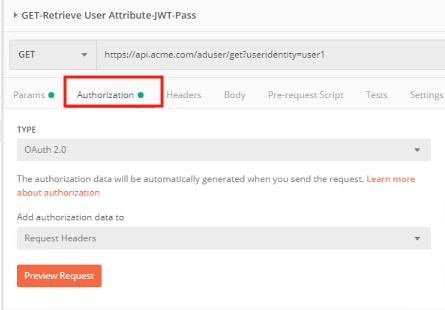
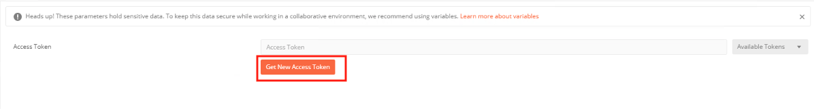
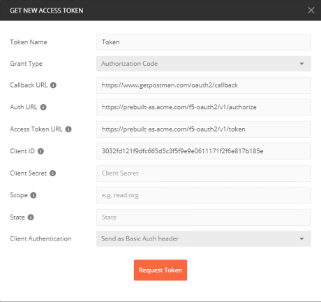
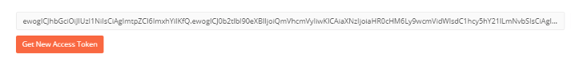
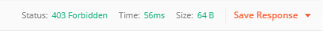
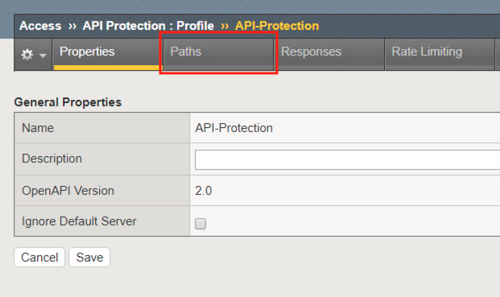
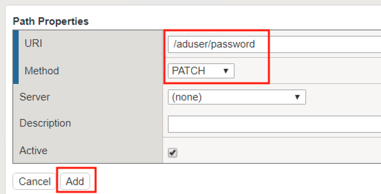
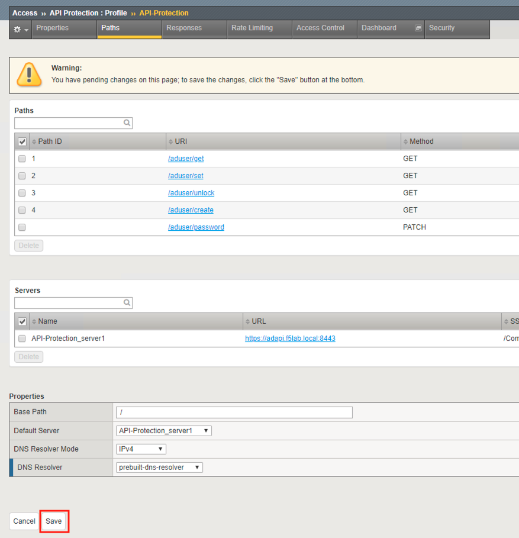
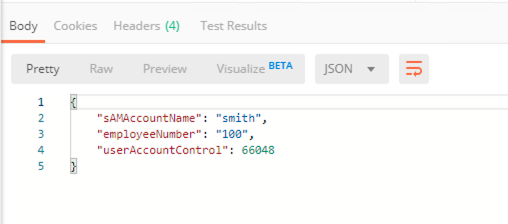

2.1.9. Lab – API Protection Dashboard¶
Organizations change and with that change new APIs are introduced requiring modifications to the API Gateway. In this section you will learn how to add additional paths
2.1.9.1. Task – Verify no access to API¶
- From the Jumpbox, open Postman

- Expand the API Protection Collection
- Select the request PATCH-Change User Password-JWT

- Select the Authorization Tab

- Click Get New Access Token

- Review the Postman Configuration. Nothing should need to be modified
- Click Request Token

- Login using Username: user1, Password: user1

- Scroll down the token and click Use Token

- Notice the Access Token field is now populated

- Click Send
- You receive a 403 Forbidden because the the new API has not been published at the Gateway

2.1.9.2. Task – Add the new API path¶
- From the Jumpbox, access the BIG-IP GUI https://10.1.1.4 (you can double-click on the BIG-IP1 bookmark from Chrome).
#. Login into the BIG-IP Configuration Utility with the following credentials: - User: admin - Password: admin
- Click on the Access tab located on the left side.

- Navigate to API Protection >> Profile. Click Profile to modify the previously created API protection Profile. Not the + Plus symbol.

- Click API-Protection

- Click Paths

- Click Create

- The URI /aduser/password
- Select the Method PATCH
- Click Add

- Click Save

2.1.9.3. Task – Test Access to the new path¶
- From the Jumpbox, open Postman
- Expand the API Protection Collection
- Select the request PATCH-Change User Password-JWT

- Select the Authorization Tab
- Click Get New Access Token
- Review the Postman Configuration. Nothing should need to be modified
- Click Request Token
- Login using Username: user1, Password: user1
- Scroll down the token and click Use Token
- The Token field is now populated
- Click Send
- You receive a 200 OK. The API is now published.
